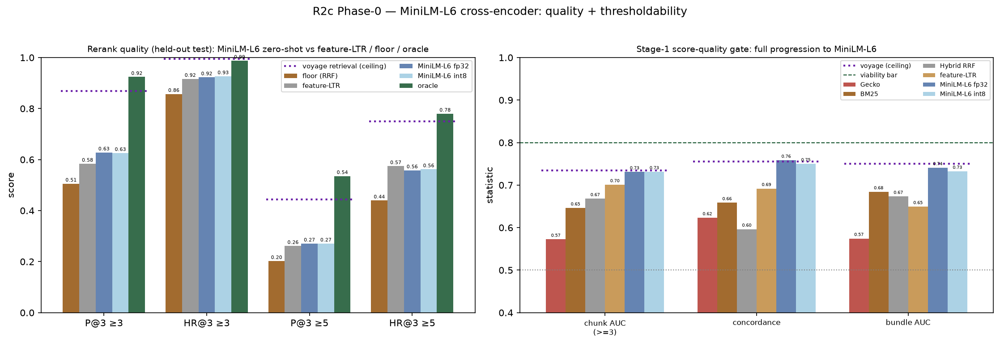

2026-06-13 · config-v0.2.0 · branch feat/r2-retriever-upgrade-20260613 ·
the joint probe from the R2c plan
Green light for the BERT cross-encoder direction. The smallest standard-BERT
reranker (ms-marco-MiniLM-L6-v2, 22M) converts cleanly to LiteRT/int8 —
the app's own runtime — at 23.9 MB, and beats the feature-LTR
bar zero-shot: P@3 0.506 → 0.628 (lenient) and 0.202 → 0.271 (strict) vs
feature-LTR's 0.584 / 0.261. Its score is also the most thresholdable yet —
concordance 0.758, matching the voyage ceiling — though still under 0.80.
All four convertibility layers now pass, including on the real device:
the int8 model runs on the target phone at 13.2 ms/(query,chunk) (4 threads),
~0.13–0.27 s for a 10–20 chunk bundle — and 3.2× faster than fp32 with identical
quality.
Convertibility — passes (the gate with zero prior evidence)
Layer
Result
Artifact
1. ONNX export
PASS
91.0 MB fp32
2. int8 quantize (ARM-targeted)
PASS
23.0 MB (ONNX arm64)
2b. LiteRT/.tflite (the app's runtime)
PASS
90.8 MB fp32 · 23.9 MB int8
3. ARM-CPU execution + latency (Mac arm64 proxy)
PASS
see latency
4. On-phone execution + latency (real device)
PASS
13.2 ms/pair int8
The standard-BERT architecture exports and quantizes without issue, and — the
result that matters most for this app — converts to LiteRT (not
just ONNX), the runtime the device actually runs, as a 23.9 MB int8
model (seq-len 256). Because this Mac is itself arm64, layers 1–3 are genuine ARM
evidence, not x86. The int8 model is pushed to the device
(/data/local/tmp/); running it for a real latency number needs the
LiteRT benchmark binary or app integration — flagged for the device track.
Architecture-level result: proving MiniLM-L6 (standard BERT) converts plausibly
unlocks the whole BERT-family tier (TinyBERT, MedCPT, bge-base) — they share the
same ops. Only a T5/seq2seq reranker would need its own spike.
Latency — measured on the real device
Official TFLite benchmark_model (arm64) via adb, on the target phone
(OPD2413, Android 15, arm64-v8a), CPU/XNNPACK, LiteRT seq-len 256, one
(query,chunk) pair per inference:
Model / config
per (query,chunk)
10-chunk bundle
20-chunk bundle
int8, 4 threads
13.2 ms
~132 ms
~265 ms
int8, 1 thread
32.2 ms
~322 ms
~644 ms
fp32, 4 threads
42.1 ms
~421 ms
~842 ms
Comfortably within budget. Reranking 10–20 chunks costs
~0.13–0.27 s on the phone CPU (int8, 4 threads) — negligible against the
1-minute whole-pipeline budget, which on-device generation dominates.
int8 is 3.2× faster than fp32 on-device (13.2 vs 42.1 ms)
with ~identical quality — a clean confirmation of the int8 deploy choice on
latency grounds, not just size.
CPU-only; an NPU/GPU delegate could be faster still. The Mac arm64 ONNX-int8
proxy (12.6 ms/pair) closely matched the device (13.2 ms), validating the
earlier estimate.
Quality + thresholdability
Which model produced these numbers: the table's headline column
is the fp32 PyTorch model, and we also scored the deployed-form
int8 (ONNX arm64) model over the same pairs at the same
max-len — so the only difference is quantization. int8 quality is
effectively identical to fp32 (P@3 0.628→0.626 lenient, 0.271→0.271
strict; HR even marginally higher; gate 0.731/0.758/0.741 → 0.731/0.750/0.732) —
confirming the deployable int8 model loses essentially nothing. Both are shown in
the figure (and the int8 row below). The on-phone int8 latency remains the open
item.

Left: rerank quality on the held-out test split (n=491) — MiniLM-L6
zero-shot vs floor / feature-LTR / oracle, with the voyage retrieval ceiling
(purple dotted, its own top-3 on the same test queries). Right: the Stage-1
score-quality gate across every score measured in R1–R2, ending at MiniLM-L6;
dashed = 0.80 viability bar, purple dotted = voyage ceiling.
Beats feature-LTR zero-shot on precision. MiniLM-L6 tops
feature-LTR on P@3 (0.628 vs 0.584 lenient; 0.271 vs 0.261 strict) and lenient
HR — capturing ~29% of the oracle P@3 headroom vs feature-LTR's ~19%. The one
exception: feature-LTR edges it on strict HR (0.574 vs 0.558).
Most thresholdable score measured — at the voyage ceiling.
Its concordance 0.758 matches voyage's 0.755 and its chunk/bundle AUC
sit just under voyage. A zero-shot 22M cross-encoder is essentially at the
API-ceiling's score quality — still under 0.80, so R1's verdict holds, but
this is the closest approach yet and a learned/fine-tuned score could clear
it.
And this is before fine-tuning. Zero-shot on MS-MARCO
(web) domain, not yet trained on our 230k OBGYN pairs — the fine-tune step
should push quality (and thresholdability) further.
The oracle matches or exceeds the voyage retrieval ceiling.
Perfect reranking of our hybrid top-20 (oracle) reaches P@3 0.924 / 0.536
(lenient/strict) vs voyage's own top-3 at 0.870 / 0.445 — so a good-enough
reranker on the pool we already retrieve can rival an API-only top-tier
retriever we can't deploy. MiniLM-L6 zero-shot (0.628 / 0.271) sits well
below both, leaving clear room for fine-tuning and the bigger candidates.
Decision
Proceed with the BERT cross-encoder. It converts to the
app's runtime as a tiny int8 model, fits the latency budget (ARM proxy), and
already beats the deployable backup zero-shot. The convertibility gate that
blocked the lit review's confidence is cleared at the architecture level.
Device track — done end-to-end. Standalone latency
(layer 4) closed at 13.2 ms/pair, and the reranker is now integrated
into the app and verified running in the real pipeline (see below).
Data track (next): scale Option B + fine-tune. Score MedCPT
and the Qwen3-8B / bge-v2-m3 references on the same test split (cluster), then
fine-tune MiniLM-L6 (or the winner) on the 230k pairs and re-measure quality
and the Stage-1 gate — the fine-tuned score is the best remaining shot at
reviving the R1 threshold.
Scope: offline + Mac-arm64; quality on the held-out test split, zero-shot.
Convertibility layers 1–3 proven here; layer 4 (on-phone latency) pending. TFLite
exported at fixed seq-len 256 — chunks longer than that are truncated, a knob to
revisit on-device. The on-device feature/tokenizer path must match training, and
mind the x86-vs-ARM float drift noted in R1.
In-app integration (verified on device)
Beyond the standalone benchmark, the reranker was integrated into the deployed
app (com.example.app, branch feat/litert-reranker-20260613
in the mamai repo) and run in the real RAG pipeline on the phone (OPD2413). It
fetches a deeper retrieval pool (retrieval.rerank_depth=20) and
reorders it to top-3 before prompt injection, behind a
retrieval.rerank_enabled flag.
[QUERY] "What are the danger signs in pregnancy that require urgent referral?" retrieval: true
[TIMING] retrieval (embed + vector search): 2594 ms, 20 docs (fetchK=20)
[RERANK] scored 20 chunks in 842 ms; top score 5.765
[RERANK] reranked to top-3 → generation
It runs. The TFLite cross-encoder (org.tensorflow:tensorflow-lite
2.17.0) coexists with the litertlm LLM stack in one APK, loads at init, and
scores in the live pipeline — proving the architecture is deployable in the
real app, not just in isolation.
In-app latency: 842 ms to score 20 chunks, vs the ~265 ms
standalone benchmark (20 × 13.2 ms). The gap is real-world overhead —
WordPiece tokenization in Kotlin, first-call warmup, single-threaded
scoring loop — exactly the decomposition the standalone benchmark was set
up to isolate. Still small against the 1-minute pipeline budget; reducing
it (batch the 20 passes, cache warmup, tune threads) is a clear follow-up.
Caveats: the WordPiece tokenizer is a faithful-but-unverified
port (exact HF parity is a follow-up before trusting absolute scores), and
the model runs at seq-len 256 (long chunks truncate). Quality in-app should
match the offline int8 numbers once tokenizer parity is confirmed.